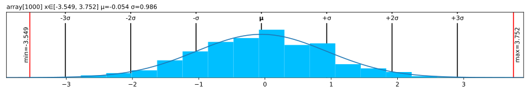
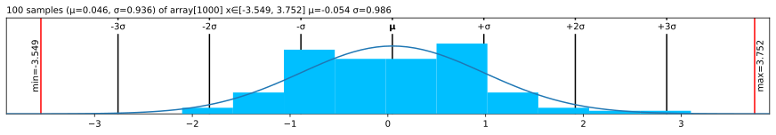
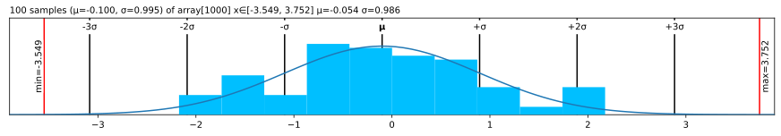

| Type | Default | Details | |
|---|---|---|---|
| precision | int | 3 | Digits after . |
| threshold_max | int | 3 | .abs() larger than 1e3 -> Sci mode |
| threshold_min | int | -4 | .abs() smaller that 1e-4 -> Sci mode |
| sci_mode | NoneType | None | Sci mode (2.3e4). None=auto |
| indent | int | 2 | Indent for .deeper() |
| color | bool | True | ANSI colors in text |
| deeper_width | int | 9 | For .deeper, width per level |
| repr | NoneType | None | Use func e.g. lovely for repr(np.ndarray) |
| str | NoneType | None | Use func e.g. lovely for str(np.ndarray) |
| plt_seed | int | 42 | Sampling seed for plot |
| fig_close | bool | True | Close matplotlib Figure |
| fig_show | bool | False | Call plt.show() for .plt, .chans and .rgb |
🤔 Config
Defaults:
set_config
set_config (precision:Union[~Default,int,NoneType]=Ignore, threshold_min:Union[~Default,int,NoneType]=Ignore, threshold_max:Union[~Default,int,NoneType]=Ignore, sci_mode:Union[~Default,bool,NoneType]=Ignore, indent:Union[~Default,bool,NoneType]=Ignore, color:Union[~Default,bool,NoneType]=Ignore, deeper_width:Union[~Default,int,NoneType]=Ignore, repr:Union[~Default,Callable,NoneType]=Ignore, str:Union[~Default,Callable,NoneType]=Ignore, plt_seed:Union[~Default,int,NoneType]=Ignore, fig_close:Union[~Default,bool,NoneType]=Ignore, fig_show:Union[~Default,bool,NoneType]=Ignore)
Set config variables
get_config
get_config ()
Get a copy of config variables
config
config (precision:Union[~Default,int,NoneType]=Ignore, threshold_min:Union[~Default,int,NoneType]=Ignore, threshold_max:Union[~Default,int,NoneType]=Ignore, sci_mode:Union[~Default,bool,NoneType]=Ignore, indent:Union[~Default,bool,NoneType]=Ignore, color:Union[~Default,bool,NoneType]=Ignore, deeper_width:Union[~Default,int,NoneType]=Ignore, repr:Union[~Default,Callable,NoneType]=Ignore, str:Union[~Default,Callable,NoneType]=Ignore, plt_seed:Union[~Default,int,NoneType]=Ignore, fig_close:Union[~Default,bool,NoneType]=Ignore, fig_show:Union[~Default,bool,NoneType]=Ignore)
Context manager for temporarily setting config options
Examples
from lovely_numpy import lo, lovely, set_config, get_config, configPrecision
set_config(precision=5)
lo(np.array([1., 2, 3]))array[3] x∈[1.00000, 3.00000] μ=2.00000 σ=0.81650 [1.00000, 2.00000, 3.00000]Scientific mode
set_config(sci_mode=True) # Force always on
lo(np.array([1., 2, 3]))array[3] x∈[1.00000e+00, 3.00000e+00] μ=2.00000e+00 σ=8.16497e-01 [1.00000e+00, 2.00000e+00, 3.00000e+00]Color on/off
set_config(color=False) # Force always off
lo(np.array(np.nan))array NaN! nanRepr and str
set_config(repr=lovely)
np.array([1,2])array[2] i64 μ=1.50000e+00 σ=5.00000e-01 [1, 2]
Note
I expect that most people would want repr and str to do the same thing in this context.
Setting repr also sets str. Pass str=None to only set repr
set_config(repr=func) # Set both `repr` and `str`.
set_config(repr=func, str=None) # Set `repr`, unset `str`
set_config(str=func) # Set `str` only, don't touch `repr`
set_config(repr=None) # Unset `repr`and `str`
set_config(str=None) # Unset `str` onlyReser to defaults
set_config(precision=None, sci_mode=None, color=None, repr=None)lo(np.array([1., 2, np.nan]))array[3] μ=1.500 σ=0.500 NaN! [1.000, 2.000, nan]
np.array([1,2])array([1, 2])Context manager
with config(sci_mode=True):
print(lo(np.array([1., 2, 3])))array[3] x∈[1.000e+00, 3.000e+00] μ=2.000e+00 σ=8.165e-01 [1.000e+00, 2.000e+00, 3.000e+00]lo(np.array([1., 2, 3]))array[3] x∈[1.000, 3.000] μ=2.000 σ=0.816 [1.000, 2.000, 3.000]Matplotlib and seed
a = np.random.default_rng(seed=1).normal(size=1000)_ = lo(a).plt() # The figure was closed, it will not be displayedset_config(fig_close=False)
_ = lo(a).plt() # figure was not closed. All figures that are not closed are displayed after the cell runs.
For performance reasons, .plt will randomly sample up tp max_s elements from the data (10k be default).
You can change the seed used for this sampling (42 by default):
set_config(plt_seed=1)
lo(a).plt(max_s=100)
set_config(plt_seed=2)
lo(a).plt(max_s=100)
More details in matplotlib